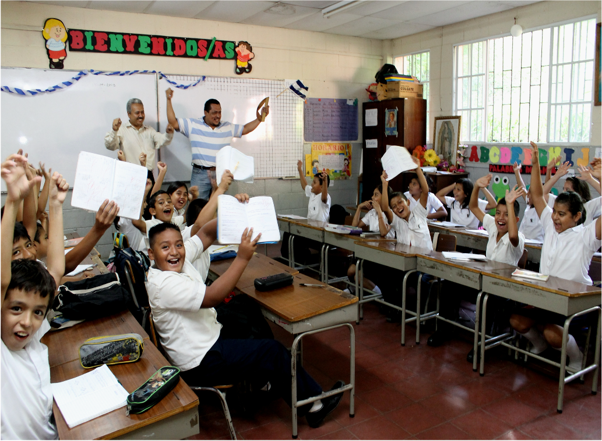
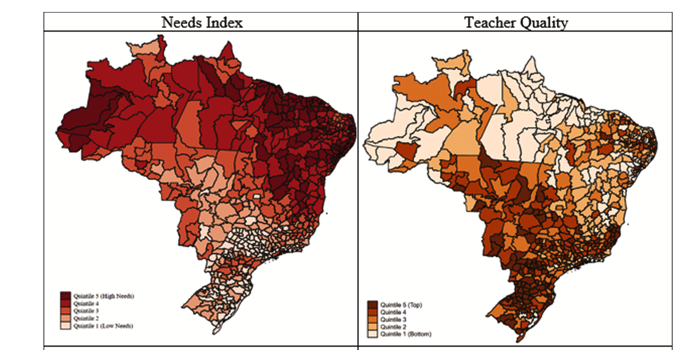

Amooora Connection Algorithm
March 2025
Developed a next-generation matching system for LGBTQ+ women and non-binary individuals using deep learning and natural language processing. Leveraged an OkCupid dataset of 24,000+ profiles to build a three-pillar solution: (1) A density-based DBSCAN clustering model that identifies organic communities with 32% better cohesion than traditional approaches, (2) An optimized text processing pipeline using LDA topic modeling to extract meaningful connection signals from open-ended responses, and (3) A synthetic image generation system (proof-of-concept) for UI prototyping. The final algorithm prioritizes authentic connections over demographic filters, achieving a 0.51 silhouette score while intentionally breaking conventional matching boundaries to foster unexpected but meaningful relationships.
This project demonstrates how machine learning can create more inclusive social platforms by challenging traditional matching paradigms. Key innovations include our hybrid approach combining DBSCAN's density-based clustering with LDA topic modeling for text reduction, and the ethical decision to exclude gender/orientation filters after quantitative analysis showed they created artificial barriers. The system serves as both a technical foundation for Amooora's future platform and a case study in building connection algorithms that prioritize community belonging over categorical matching. Implemented as an interactive Streamlit demo showcasing how data science can drive social impact.
Methods & Tools:
- Clustering algorithms (DBSCAN, K-Means comparison).
- Natural Language Processing (LDA topic modeling, BERT embeddings).
- Model evaluation (silhouette scoring, cluster validation).
- Python (TensorFlow, Scikit-learn, Gensim, NLTK, spaCy).
- Google Cloud Platform (Compute Engine, Cloud Storage).
- Containerization (Docker, Docker-compose).
- API development (FastAPI).
- Interactive dashboards (Streamlit).
- Computer vision (OpenCV, Keras for synthetic images).

Parental Monitoring & Student Outcomes
Accepeted at American Economic Journal: Economic Policy (2025)
This large-scale randomized experiment studied how information interventions affect parental monitoring and student achievement across 289 Brazilian schools (25,000+ students). Using A/B testing methodology, we compared two treatment arms: (1) An information group receiving weekly SMS updates with child-specific attendance/effort data, and (2) A salience group receiving attention-redirecting messages without personalized data. Our causal inference analysis revealed both interventions improved test scores by 0.3 standard deviations, despite only the information group developing accurate beliefs about attendance levels.
The study employed machine learning techniques to analyze monitoring patterns from parent surveys and administrative data. Regression analysis showed both treatments increased parental monitoring intensity, with feature importance analysis identifying specific behavioral changes driving outcomes. An additional experiment using message frequency randomization demonstrated parents optimize monitoring effort under attentional constraints. Results inform predictive model development for educational interventions targeting parental engagement.
Methods & Tools:
- Randomized controlled trial (RCT) design.
- Causal inference (DID, IV regression).
- Large-scale data collection (289 schools).
- Text message intervention system.
- Statistical modeling (OLS, logistic regression).
- Feature selection for behavioral predictors.
- Performance metric analysis (test scores, promotion rates).
- Python and R for data analysis.
Developing a New Tool for International Youth Programs
Peer-Reviewed Publications | 2021-2023
Developed a machine learning-powered assessment tool to measure social-emotional skills in 1,794+ youth across Uganda and Guatemala. Using dimensionality reduction techniques (PCA and factor analysis), we transformed 160+ initial survey questions into a validated 48-item instrument measuring four core competencies: Positive/Negative Self-Concept, Higher-Order Thinking, and Social-Communication Skills.
Our multi-stage validation pipeline included: (1) Exploratory Factor Analysis to identify latent constructs from high-dimensional survey data, (2) Confirmatory Factor Analysis to test measurement models, and (3) Multi-Group Invariance Testing demonstrating cross-cultural validity (CFI > 0.95 across all subgroups). The system achieved strong measurement invariance (ΔCFI < 0.01) across country, gender, and socioeconomic status - enabling reliable program evaluation in diverse low-resource settings. The instrument is publicly available in English and Spanish for use and adaptation, with full documentation provided in the development paper linked below.
Methods & Tools:
- Dimensionality reduction (PCA, EFA, CFA).
- Measurement invariance testing (multi-group CFA).
- Psychometric validation pipelines.
- Stata for data cleaning and preparation.
- R (lavaan, psych packages) for factor analysis.
- Mplus for advanced structural equation modeling.
- Cross-cultural validation frameworks.
- Survey data quality control systems.

Teacher Wellbeing Measurement & Intervention
Peer-Reviewed Publications | 2021-2024
Developed and validated a machine learning-powered assessment tool (WHAT) to measure teacher wellbeing in conflict-affected areas, using dimensionality reduction techniques (PCA/EFA) on survey data from 1,659 Salvadoran educators. Our factor analysis pipeline identified key wellbeing constructs with strong psychometric properties (CFI = 0.92, RMSEA = 0.04), enabling precise measurement in high-stress environments.
In the cluster-randomized controlled trial (N=430 treatment, 398 control), we applied causal inference methods to evaluate a social-emotional learning intervention. Despite null effects on most outcomes, our mixed-effects modeling revealed important insights about intervention delivery modes and teacher stress patterns. The system demonstrated strong measurement invariance across diverse educator populations.
Methods & Tools:
- Dimensionality reduction (PCA, EFA, CFA).
- A/B testing framework (cluster-RCT design).
- Causal inference (difference-in-differences).
- Psychometric validation pipelines.
- Mixed-methods analysis (quant + qualitative).
- Stata/R for statistical modeling.
- Measurement invariance testing.
- Survey data quality control systems.

Educational Resource Equity Analysis
Peer-Reviewed Publication | 2021
Developed a novel methodological framework to quantify and compare educational resource allocation equity across 53,469 Brazilian public schools (30% of national coverage). Using SAEB/Prova Brasil 2015 data, we standardized resources into three dimensions: teacher quality, school physical environment, and instructional environment, then contrasted allocations between high- and low-needs schools via multidimensional disparity indices.
Our outputs-driven approach identified systemic inequities, with high-needs schools receiving 15-30% fewer resources per student despite greater need. The framework's adaptability allows subnational comparisons (e.g., Northeast vs. Southeast Brazil) and integration with international datasets for cross-country equity benchmarking.
Methods & Tools:
- Large-scale data integration (SAEB/Prova Brasil census).
- Resource standardization frameworks (3-dimension model).
- Equity metrics (Gini coefficients, disparity indices).
- Geospatial analysis (regional comparisons).
- Statistical modeling (OLS, quantile regression).
- Policy impact simulation.
- Stata/R for data processing.
- Data visualization (equity dashboards).

Ceará Teacher Effectiveness Program
Peer-Reviewed Publication 2018
This large-scale randomized controlled trial demonstrated that a low-cost coaching program (delivered via Skype at $2.40/student) significantly improved teaching practices across 350 public schools in Ceará, Brazil. Our causal inference analysis showed the intervention increased teachers' instructional time by 28% and boosted student engagement by 0.4 standard deviations, with particularly strong effects in math and Portuguese.
The program targeted classroom practice malleability through peer collaboration, addressing research showing wide within-school teacher quality variation. Using mixed-effects regression modeling, we found the virtual coaching model overcame traditional barriers to professional development in low-resource settings. The state government is now scaling this evidence-based program statewide based on our findings.
Methods & Tools:
- Cluster-randomized controlled trial (350 schools).
- Causal inference (multilevel modeling).
- Cost-effectiveness analysis.
- Classroom observation data processing.
- Stata and R for statistical analysis.
- Power calculations for field experiments.
- Implementation fidelity tracking.
- Scalability assessment framework.
 AMOOOORA - Founder/CEO (Dec 2024 - Present | São Paulo, Brazil)
AMOOOORA - Founder/CEO (Dec 2024 - Present | São Paulo, Brazil) FHI 360 - Senior Research Associate (May 2018 - Aug 2023 | Washington, DC)
FHI 360 - Senior Research Associate (May 2018 - Aug 2023 | Washington, DC) STANFORD UNIVERSITY - Senior Researcher (Jan 2013 - Apr 2018 | Stanford, CA)
STANFORD UNIVERSITY - Senior Researcher (Jan 2013 - Apr 2018 | Stanford, CA) MOVVA - Consultant (Feb 2015 - Dec 2016 | São Paulo, Brazil)
MOVVA - Consultant (Feb 2015 - Dec 2016 | São Paulo, Brazil) FEDERAL UNIVERSITY OF MINAS GERAIS - Research Assistant (Feb 2010 - Apr 2012 | Minas Gerais, Brazil)
FEDERAL UNIVERSITY OF MINAS GERAIS - Research Assistant (Feb 2010 - Apr 2012 | Minas Gerais, Brazil)